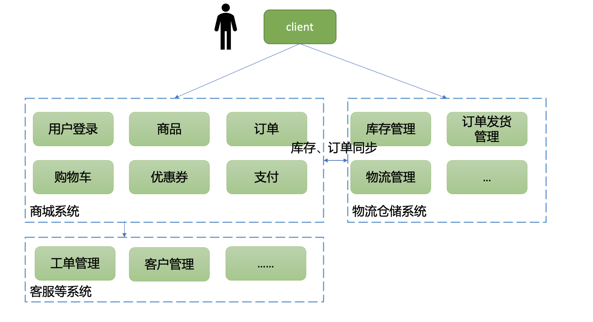
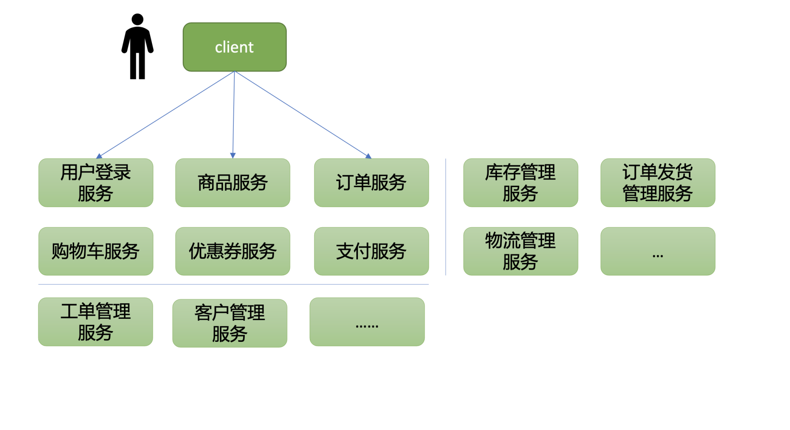
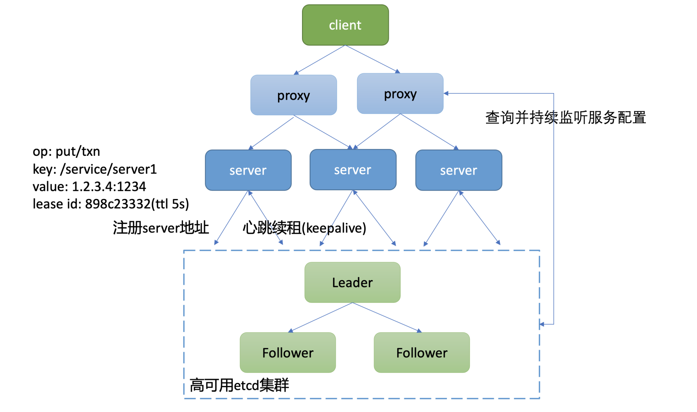
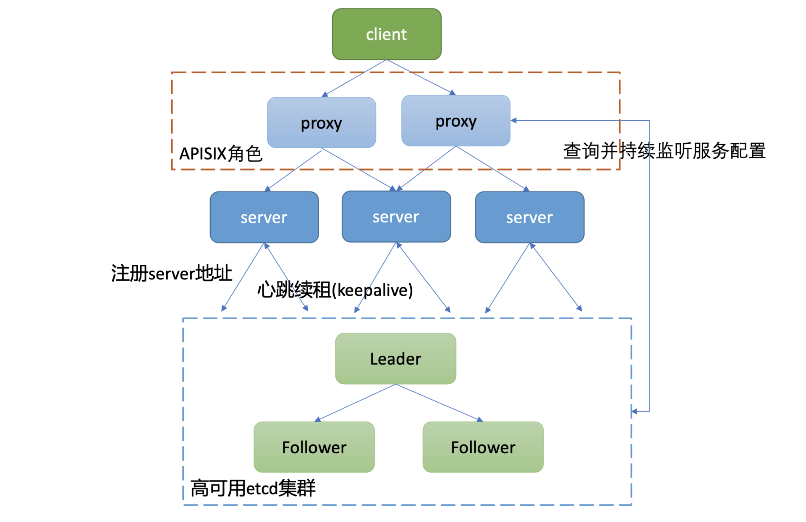
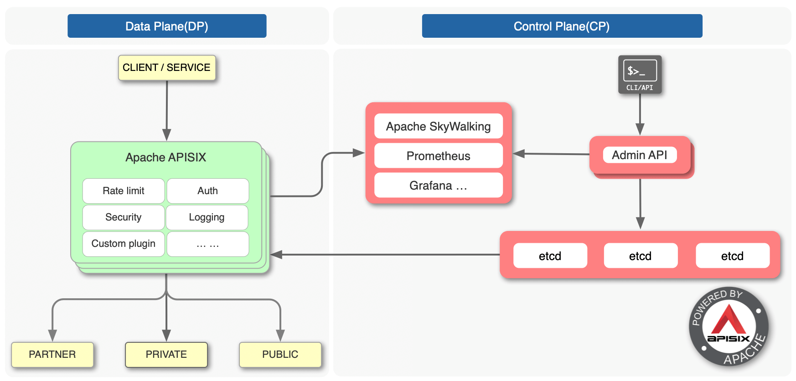

- 00 开篇词 为什么你要学习etcd_.md.html
- 01 etcd的前世今生：为什么Kubernetes使用etcd？.md.html
- 02 基础架构：etcd一个读请求是如何执行的？.md.html
- 03 基础架构：etcd一个写请求是如何执行的？.md.html
- 04 Raft协议：etcd如何实现高可用、数据强一致的？.md.html
- 05 鉴权：如何保护你的数据安全？.md.html
- 06 租约：如何检测你的客户端存活？.md.html
- 07 MVCC：如何实现多版本并发控制？.md.html
- 08 Watch：如何高效获取数据变化通知？.md.html
- 09 事务：如何安全地实现多key操作？.md.html
- 10 boltdb：如何持久化存储你的key-value数据？.md.html
- 11 压缩：如何回收旧版本数据？.md.html
- 12 一致性：为什么基于Raft实现的etcd还会出现数据不一致？.md.html
- 13 db大小：为什么etcd社区建议db大小不超过8G？.md.html
- 14 延时：为什么你的etcd请求会出现超时？.md.html
- 15 内存：为什么你的etcd内存占用那么高？.md.html
- 16 性能及稳定性（上）：如何优化及扩展etcd性能？.md.html
- 17 性能及稳定性（下）：如何优化及扩展etcd性能_.md.html
- 18 实战：如何基于Raft从0到1构建一个支持多存储引擎分布式KV服务？.md.html
- 19 Kubernetes基础应用：创建一个Pod背后etcd发生了什么？.md.html
- 20 Kubernetes高级应用：如何优化业务场景使etcd能支撑上万节点集群？.md.html
- 21 分布式锁：为什么基于etcd实现分布式锁比Redis锁更安全？.md.html
- 22 配置及服务发现：解析etcd在API Gateway开源项目中应用.md.html
- 23 选型：etcd_ZooKeeper_Consul等我们该如何选择？.md.html
- 24 运维：如何构建高可靠的etcd集群运维体系？.md.html
- 特别放送 成员变更：为什么集群看起来正常，移除节点却会失败呢？.md.html
- 结束语 搞懂etcd，掌握通往分布式存储系统之门的钥匙.md.html
- 捐赠
22 配置及服务发现：解析etcd在API Gateway开源项目中应用
你好，我是唐聪。
在软件开发的过程中，为了提升代码的灵活性和开发效率，我们大量使用配置去控制程序的运行行为。
从简单的数据库账号密码配置，到confd支持以etcd为后端存储的本地配置及模板管理，再到Apache APISIX等API Gateway项目使用etcd存储服务配置、路由信息等，最后到Kubernetes更实现了Secret和ConfigMap资源对象来解决配置管理的问题。
那么它们是如何实现实时、动态调整服务配置而不需要重启相关服务的呢？
今天我就和你聊聊etcd在配置和服务发现场景中的应用。我将以开源项目Apache APISIX为例，为你分析服务发现的原理，带你了解etcd的key-value模型，Watch机制，鉴权机制，Lease特性，事务特性在其中的应用。
希望通过这节课，让你了解etcd在配置系统和服务发现场景工作原理，帮助你选型适合业务场景的配置系统、服务发现组件。同时，在使用Apache APISIX等开源项目过程中遇到etcd相关问题时，你能独立排查、分析，并向社区提交issue和PR解决。
服务发现
首先和你聊聊服务发现，服务发现是指什么？为什么需要它呢?
为了搞懂这个问题，我首先和你分享下程序部署架构的演进。
单体架构
在早期软件开发时使用的是单体架构，也就是所有功能耦合在同一个项目中，统一构建、测试、发布。单体架构在项目刚启动的时候，架构简单、开发效率高，比较容易部署、测试。但是随着项目不断增大，它具有若干缺点，比如：
- 所有功能耦合在同一个项目中，修复一个小Bug就需要发布整个大工程项目，增大引入问题风险。同时随着开发人员增多、单体项目的代码增长、各模块堆砌在一起、代码质量参差不齐，内部复杂度会越来越高，可维护性差。
- 无法按需针对仅出现瓶颈的功能模块进行弹性扩容，只能作为一个整体继续扩展，因此扩展性较差。
- 一旦单体应用宕机，将导致所有服务不可用，因此可用性较差。
分布式及微服务架构
如何解决以上痛点呢？
当然是将单体应用进行拆分，大而化小。如何拆分呢？ 这里我就以一个我曾经参与重构建设的电商系统为案例给你分析一下。在一个单体架构中，完整的电商系统应包括如下模块：
- 商城系统，负责用户登录、查看及搜索商品、购物车商品管理、优惠券管理、订单管理、支付等功能。
- 物流及仓储系统，根据用户订单，进行发货、退货、换货等一系列仓储、物流管理。
- 其他客服系统、客户管理系统等。
因此在分布式架构中，你可以按整体功能，将单体应用垂直拆分成以上三大功能模块，各个功能模块可以选择不同的技术栈实现，按需弹性扩缩容，如下图所示。

那什么又是微服务架构呢？
它是对各个功能模块进行更细立度的拆分，比如商城系统模块可以拆分成：
- 用户鉴权模块；
- 商品模块；
- 购物车模块；
- 优惠券模块；
- 支付模块；
- ……
在微服务架构中，每个模块职责更单一、独立部署、开发迭代快，如下图所示。

那么在分布式及微服务架构中，各个模块之间如何及时知道对方网络地址与端口、协议，进行接口调用呢？
为什么需要服务发现中间件?
其实这个知道的过程，就是服务发现。在早期的时候我们往往通过硬编码、配置文件声明各个依赖模块的网络地址、端口，然而这种方式在分布式及微服务架构中，其运维效率、服务可用性是远远不够的。
那么我们能否实现通过一个特殊服务就查询到各个服务的后端部署地址呢？ 各服务启动的时候，就自动将IP和Port、协议等信息注册到特殊服务上，当某服务出现异常的时候，特殊服务就自动删除异常实例信息？
是的，当然可以，这个特殊服务就是注册中心服务，你可以基于etcd、ZooKeeper、consul等实现。
etcd服务发现原理
那么如何基于etcd实现服务发现呢?
下面我给出了一个通用的服务发现原理架构图，通过此图，为你介绍下服务发现的基本原理。详细如下：
- 整体上分为四层，client层、proxy层(可选)、业务server、etcd存储层组成。引入proxy层的原因是使client更轻、逻辑更简单，无需直接访问存储层，同时可通过proxy层支持各种协议。
- client层通过负载均衡访问proxy组件。proxy组件启动的时候，通过etcd的Range RPC方法从etcd读取初始化服务配置数据，随后通过Watch接口持续监听后端业务server扩缩容变化，实时修改路由。
- proxy组件收到client的请求后，它根据从etcd读取到的对应服务的路由配置、负载均衡算法（比如Round-robin）转发到对应的业务server。
- 业务server启动的时候，通过etcd的写接口Txn/Put等，注册自身地址信息、协议到高可用的etcd集群上。业务server缩容、故障时，对应的key应能自动从etcd集群删除，因此相关key需要关联lease信息，设置一个合理的TTL，并定时发送keepalive请求给Leader续租，以防止租约及key被淘汰。

当然，在分布式及微服务架构中，我们面对的问题不仅仅是服务发现，还包括如下痛点：
- 限速；
- 鉴权；
- 安全；
- 日志；
- 监控；
- 丰富的发布策略；
- 链路追踪；
- ……
为了解决以上痛点，各大公司及社区开发者推出了大量的开源项目。这里我就以国内开发者广泛使用的Apache APISIX项目为例，为你分析etcd在其中的应用，了解下它是怎么玩转服务发现的。
Apache APISIX原理
Apache APISIX它具备哪些功能呢？
它的本质是一个无状态、高性能、实时、动态、可水平扩展的API网关。核心原理就是基于你配置的服务信息、路由规则等信息，将收到的请求通过一系列规则后，正确转发给后端的服务。
Apache APISIX其实就是上面服务发现原理架构图中的proxy组件，如下图红色虚线框所示。

Apache APISIX详细架构图如下（引用自社区项目文档）。从图中你可以看到，它由控制面和数据面组成。
控制面顾名思义，就是你通过Admin API下发服务、路由、安全配置的操作。控制面默认的服务发现存储是etcd，当然也支持consul、nacos等。
你如果没有使用过Apache APISIX的话，可以参考下这个example，快速、直观的了解下Apache APISIX是如何通过Admin API下发服务和路由配置的。
数据面是在实现基于服务路由信息数据转发的基础上，提供了限速、鉴权、安全、日志等一系列功能，也就是解决了我们上面提的分布式及微服务架构中的典型痛点。

那么当我们通过控制面API新增一个服务时，Apache APISIX是是如何实现实时、动态调整服务配置，而不需要重启网关服务的呢？
下面，我就和你聊聊etcd在Apache APISIX项目中的应用。
etcd在Apache APISIX中的应用
在搞懂这个问题之前，我们先看看Apache APISIX在etcd中，都存储了哪些数据呢？它的数据存储格式是怎样的？
数据存储格式
下面我参考Apache APISIX的example案例（apisix:2.3），通过Admin API新增了两个服务、路由规则后，执行如下查看etcd所有key的命令：
etcdctl get "" --prefix --keys-only
etcd输出结果如下：
/apisix/consumers/
/apisix/data_plane/server_info/f7285805-73e9-4ce4-acc6-a38d619afdc3
/apisix/global_rules/
/apisix/node_status/
/apisix/plugin_metadata/
/apisix/plugins
/apisix/plugins/
/apisix/proto/
/apisix/routes/
/apisix/routes/12
/apisix/routes/22
/apisix/services/
/apisix/services/1
/apisix/services/2
/apisix/ssl/
/apisix/ssl/1
/apisix/ssl/2
/apisix/stream_routes/
/apisix/upstreams/
然后我们继续通过etcdctl get命令查看下services都存储了哪些信息呢？
root@e9d3b477ca1f:/opt/bitnami/etcd# etcdctl get /apisix/services --prefix
/apisix/services/
init_dir
/apisix/services/1
{"update_time":1614293352,"create_time":1614293352,"upstream":{"type":"roundrobin","nodes":{"172.18.5.12:80":1},"hash_on":"vars","scheme":"http","pass_host":"pass"},"id":"1"}
/apisix/services/2
{"update_time":1614293361,"create_time":1614293361,"upstream":
{"type":"roundrobin","nodes":{"172.18.5.13:80":1},"hash_on":"vars","scheme":"http","pass_host":"pass"},"id":"2"}
从中我们可以总结出如下信息：
- Apache APSIX 2.x系列版本使用的是etcd3。
- 服务、路由、ssl、插件等配置存储格式前缀是/apisix + “/” + 功能特性类型（routes/services/ssl等），我们通过Admin API添加的路由、服务等配置就保存在相应的前缀下。
- 路由和服务配置的value是个Json对象，其中服务对象包含了id、负载均衡算法、后端节点、协议等信息。
了解完Apache APISIX在etcd中的数据存储格式后，那么它是如何动态、近乎实时地感知到服务配置变化的呢？
Watch机制的应用
与Kubernetes一样，它们都是通过etcd的Watch机制来实现的。
Apache APISIX在启动的时候，首先会通过Range操作获取网关的配置、路由等信息，随后就通过Watch机制，获取增量变化事件。
使用Watch机制最容易犯错的地方是什么呢？
答案是不处理Watch返回的相关错误信息，比如已压缩ErrCompacted错误。Apache APISIX项目在从etcd v2中切换到etcd v3早期的时候，同样也犯了这个错误。
去年某日收到小伙伴求助，说使用Apache APISIX后，获取不到新的服务配置了，是不是etcd出什么Bug了？
经过一番交流和查看日志，发现原来是Apache APISIX未处理ErrCompacted错误导致的。根据我们07Watch原理的介绍，当你请求Watch的版本号已被etcd压缩后，etcd就会取消这个watcher，这时你需要重建watcher，才能继续监听到最新数据变化事件。
查清楚问题后，小伙伴向社区提交了issue反馈，随后Apache APISIX相关同学通过PR 2687修复了此问题，更多信息你可参考Apache APISIX访问etcd相关实现代码文件。
鉴权机制的应用
除了Watch机制，Apache APISIX项目还使用了鉴权，毕竟配置网关是个高危操作，那它是如何使用etcd鉴权机制的呢？ etcd鉴权机制中最容易踩的坑是什么呢？
答案是不复用client和鉴权token，频繁发起Authenticate操作，导致etcd高负载。正如我在17和你介绍的，一个8核32G的高配节点在100个连接时，Authenticate QPS仅为8。可想而知，你如果不复用token，那么出问题就很自然不过了。
Apache APISIX是否也踩了这个坑呢？
Apache APISIX是基于Lua构建的，使用的是lua-resty-etcd这个项目访问etcd，从相关issue反馈看，的确也踩了这个坑。社区用户反馈后，随后通过复用client、更完善的token复用机制解决了Authenticate的性能瓶颈，详细信息你可参考PR 2932、PR 100。
除了以上介绍的Watch机制、鉴权机制，Apache APISIX还使用了etcd的Lease特性和事务接口。
Lease特性的应用
为什么Apache APISIX项目需要Lease特性呢？
服务发现的核心工作原理是服务启动的时候将地址信息登录到注册中心，服务异常时自动从注册中心删除。
这是不是跟我们前面05节介绍的
没错，Apache APISIX通过etcd v2的TTL特性、etcd v3的Lease特性来实现类似的效果，它提供的增加服务路由API，支持设置TTL属性，如下面所示：
# Create a route expires after 60 seconds, then it's deleted automatically
$ curl http://127.0.0.1:9080/apisix/admin/routes/2?ttl=60 -H 'X-API-KEY: edd1c9f034335f136f87ad84b625c8f1' -X PUT -i -d '
{
"uri": "/aa/index.html",
"upstream": {
"type": "roundrobin",
"nodes": {
"39.97.63.215:80": 1
}
}
}'
当一个路由设置非0 TTL后，Apache APISIX就会为它创建Lease，关联key，相关代码如下：
-- lease substitute ttl in v3
local res, err
if ttl then
local data, grant_err = etcd_cli:grant(tonumber(ttl))
if not data then
return nil, grant_err
end
res, err = etcd_cli:set(prefix .. key, value, {prev_kv = true, lease = data.body.ID})
else
res, err = etcd_cli:set(prefix .. key, value, {prev_kv = true})
end
事务特性的应用
介绍完Lease特性在Apache APISIX项目中的应用后，我们再来思考两个问题。为什么它还依赖etcd的事务特性呢？简单的执行put接口有什么问题？
答案是它跟Kubernetes是一样的使用目的。使用事务是为了防止并发场景下的数据写冲突，比如你可能同时发起两个Patch Admin API去修改配置等。如果简单地使用put接口，就会导致第一个写请求的结果被覆盖。
Apache APISIX是如何使用事务接口提供的乐观锁机制去解决并发冲突的问题呢？
核心依然是我们前面课程中一直强调的mod_revision，它会比较事务提交时的mod_revision与预期是否一致，一致才能执行put操作，Apache APISIX相关使用代码如下：
local compare = {
{
key = key,
target = "MOD",
result = "EQUAL",
mod_revision = mod_revision,
}
}
local success = {
{
requestPut = {
key = key,
value = value,
lease = lease_id,
}
}
}
local res, err = etcd_cli:txn(compare, success)
if not res then
return nil, err
end
关于Apache APISIX事务特性的引入、背景以及更详细的实现，你也可以参考PR 2216。
小结
最后我们来小结下今天的内容。今天我给你介绍了服务部署架构的演进，我们从单体架构的缺陷开始、到分布式及微服务架构的诞生，和你分享了分布式及微服务架构中面临的一系列痛点（如服务发现，鉴权，安全，限速等等）。
而开源项目Apache APISIX正是一个基于etcd的项目，它为后端存储提供了一系列的解决方案，我通过它的架构图为你介绍了其控制面和数据面的工作原理。
随后我从数据存储格式、Watch机制、鉴权机制、Lease特性以及事务特性维度，和你分析了它们在Apache APISIX项目中的应用。
数据存储格式上，APISIX采用典型的prefix + 功能特性组织格式。key是相关配置id，value是个json对象，包含一系列业务所需要的核心数据。你需要注意的是Apache APISIX 1.x版本使用的etcd v2 API，2.x版本使用的是etcd v3 API，要求至少是etcd v3.4版本以上。
Watch机制上，APISIX依赖它进行配置的动态、实时更新，避免了传统的修改配置，需要服务重启等缺陷。
鉴权机制上，APISIX使用密码认证，进行多租户认证、授权，防止用户出现越权访问，保护网关服务的安全。
Lease及事务特性上，APISIX通过Lease来设置自动过期的路由规则，解决服务发现中的节点异常自动剔除等问题，通过事务特性的乐观锁机制来实现并发场景下覆盖更新等问题。
希望通过本节课的学习，让你从etcd角度更深入了解APISIX项目的原理，了解etcd各个特性在其中的应用，学习它的最佳实践经验和经历的各种坑，避免重复踩坑。在以后的工作中，在你使用APISIX等开源项目遇到etcd相关错误时，能独立分析、排查，甚至给社区提交PR解决。
思考题
好了，这节课到这里也就结束了，最后我给你留了一个开放的配置系统设计思考题。
假设老板让你去设计一个大型配置系统，满足公司各个业务场景的诉求，期望的设计目标如下：
- 高可靠。配置系统的作为核心基础设施，期望可用性能达到99.99%。
- 高性能。公司业务多，规模大，配置系统应具备高性能、并能水平扩容。
- 支持多业务、多版本管理、多种发布策略。
你认为etcd适合此业务场景吗？如果适合，分享下你的核心想法、整体架构，如果不适合，你心目中的理想存储和架构又是怎样的呢？
欢迎大家留言一起讨论，后面我也将在答疑篇中分享我的一些想法和曾经大规模TO C业务中的实践经验。
感谢你阅读，也欢迎你把这篇文章分享给更多的朋友一起阅读。
© 2019 - 2023 Liangliang Lee. Powered by gin and hexo-theme-book.